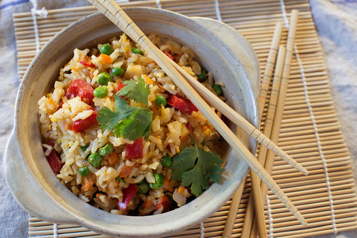

Fried Rice

So good!
This is a recipe that I like to meal prep and bring to work with a chicken entree!
Ingredients
- 3 tablespoons neutral oil, like canola or grapeseed
- 1 medium onion, peeled and roughly chopped
- 1 red bell pepper, stemmed, cored and roughly chopped
- 2 carrots, peeled and finely minced
- 1 tablespoon minced garlic, or to taste
- 1 cup peas (defrost if frozen)
- 1 tablespoon minced ginger, or to taste
- 3 to 4 cups cooked white rice, cooled
- 2 eggs, lightly beaten
- ¼ cup Shaoxing wine, or water
- 2 tablespoons soy sauce
- 1 tablespoon sesame oil
- 2 teaspoons oyster sauce (optional)
- Salt and freshly ground black pepper to taste
- ½ cup minced cilantro or scallions
Steps
- Put 1 tablespoon of the oil in a wok or a large skillet, and turn heat to high. When it begins to shimmer, add onion, pepper and carrots and cook, stirring occasionally, until softened and beginning to brown, 5 to 10 minutes. With a slotted spoon, remove vegetables to a bowl.
- Drain peas if necessary, and add them to skillet; cook, shaking pan, for about a minute, or until hot. Remove them to the bowl.
- Put remaining oil in the skillet, followed by garlic and ginger. When the mixture is fragrant, about 15 seconds later, add the rice, breaking up clumps with a spoon as you go along and tossing it with oil. When the rice is well coated, make a well in the center and break the eggs into it. Scramble these, then stir into the rice.
- Return vegetables to the skillet and stir to integrate. Add wine or water and cook, stirring, for approximately 1 minute. Add soy sauce, sesame oil, and oyster sauce, then taste and add salt and pepper if necessary. Turn off heat, stir in the cilantro and serve.
Recipe Notes
Adapted from this recipe and this recipe.
Return to recipe list.